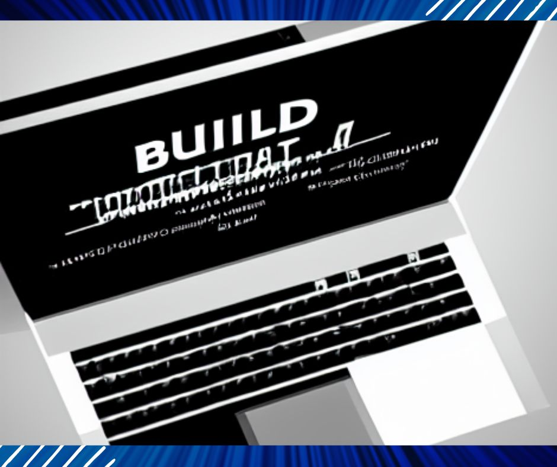

Assuming you would like tips on how to build your own laptop:
1. Choose your desired laptop specs and find a corresponding laptop kit online. Make sure to get all the required parts!
2. Once you have all the parts, it’s time to start assembly. Begin by following the detailed instructions that come with the kit.
3. Take your time in putting everything together – rushing through the process can result in errors and faulty components.
4. Once everything is plugged in and screwed tight, boot up your new creation and cross your fingers! If everything went smoothly, you should now be the proud owner of a brand new, custom-built laptop. Congratulations!
How to build your own laptop from scratch
If you’re interested in building your own laptop from scratch, there are a few things you’ll need to consider. First, you’ll need to decide what type of laptop you want to build. There are three main types of laptops: netbooks, notebooks, and ultrabooks. Each has its own set of pros and cons, so it’s important to choose the right one for your needs.
Next, you’ll need to gather the necessary materials. For most laptops, you’ll need a motherboard, CPU, RAM, hard drive, and optical drive. You may also want to consider adding a dedicated graphics card or other expansion cards. Once you have all the parts, it’s time to start assembly!
Building a laptop from scratch can be a rewarding experience, and it’s definitely possible to save money by doing it yourself. However, it’s important to make sure that you’re up for the challenge before getting started. Building a laptop is not for everyone, and it’s important to make sure that you understand the risks involved.
If you’re ready to take on the challenge of building your own laptop, there are plenty of resources available to help you get started. Check out our guide below for more information. Good luck!
Related Article: Best Gaming Laptop Recommendations in 2023 [TOP16]
Why Build Your Own Laptop?
There are several reasons why you might want to build your own laptop. First, it’s a great way to save money. If you’re able to find good deals on the individual parts, you can easily save hundreds of dollars by building your own laptop instead of buying one pre-built.
Second, building your own laptop gives you complete control over the final product. You can choose exactly which parts and components you want to use, and you’re not limited by what’s available from a particular manufacturer. This allows you to create a unique laptop that’s tailored specifically to your needs.
Finally, building your own laptop is simply a fun and rewarding experience. It’s a great way to learn about computers and how they work, and you’ll end up with a product that you can be proud of.
If any of these reasons appeal to you, then building your own laptop is definitely something you should consider. Read on for more information about the process.
What You’ll Need
Building your own laptop from scratch requires a bit of knowledge and some specialized tools. First, you’ll need to have a good understanding of computers and how they work. This will help you when it comes time to choose parts and put everything together.
Second, you’ll need access to some specialized tools. While it’s possible to build a laptop without them, having the right tools will make the job much easier. A few of the most important tools you’ll need include:
– A screwdriver set: This is essential for opening up the case and installing components.
– A soldering iron: This is necessary if you want to add a dedicated graphics card or other expansion cards.
– A multimeter: This is useful for testing components and making sure they’re working properly.
If you don’t have any experience with electronics, it’s probably a good idea to get some help from someone who does. Building a laptop from scratch requires a bit of knowledge about electronics, and it’s very easy to make mistakes that can damage parts or render the entire project unusable. Having someone nearby who can offer advice and guidance will be invaluable.
Once you have the necessary knowledge and tools, it’s time to start gathering parts. You’ll need a few basic components before you can even start thinking about putting everything together. These include:
– A motherboard: This is the foundation of your laptop, and it needs to be compatible with all the other parts you’ll be using. Choose wisely, as this is one of the most important decisions you’ll make.
– A CPU: This is the heart of your laptop, and it needs to be powerful enough to handle whatever tasks you throw at it. Again, choose wisely, as this is a very important decision.
– RAM: This is a memory that’s used by the CPU to store data temporarily. You’ll need at least 4GB, but more is always better.
– A hard drive: This is where all your data will be stored permanently. You’ll need at least 250GB, but larger drives are available if you need more space.
– A wireless card: This allows your laptop to connect to the internet wirelessly. It’s not strictly necessary, but it’s a nice feature to have.
These are just the basic components you’ll need before you can start putting everything together. In addition to these parts, you’ll also need a few other things like a power supply, an operating system, and various cables and connectors. However, these are all relatively inexpensive and easy to find.
Once you have all the parts and components you need, it’s time to start putting everything together. The exact process will vary depending on which parts you’re using, but the general idea is the same.
First, you’ll need to assemble the motherboard. This involves attaching the CPU, RAM, and other components to the motherboard itself. Make sure everything is properly seated and connected before moving on.
Next, you’ll need to install the hard drive and optical drive. These are usually mounted in the front of the case, and they need to be securely attached so they don’t come loose during use.
After that, it’s time to install the operating system. This can be done from a CD or USB drive, or you can simply download it from the internet. Once the operating system is installed, you’ll need to install any drivers or updates that are required.
Finally, you’ll need to connect all the cables and connectors. This includes power, display, Ethernet, and anything else that’s required. Make sure everything is plugged in securely and nothing is loose before powering on the laptop for the first time.
If everything goes according to plan, your laptop should now be up and running! Congratulations on building your very own laptop from scratch!
How to build your own laptop for gaming
Parts needed:
1. A laptop case or other sturdy enclosure
2. A motherboard that supports your desired level of gaming performance
3. A CPU that can handle the demands of gaming
4. A GPU that will give you the visual fidelity and frame rates you want
5. Enough RAM to support your gaming habits
6. Storage for all your games, plus any extra media files you might want to keep on hand
7. A quality display with a fast response time
8. A good keyboard and mouse
9. Optional: A dedicated sound card or external sound solution
10. Optional: A TV tuner card (if you want to use your laptop for gaming and watching TV)
11. Optional: A Blu-ray drive (if you want to use your laptop for gaming and movies)
Putting It All Together
1. Start by choosing a laptop case or other sturdy enclosure that will hold all your parts. Make sure it has good ventilation, so your components don’t overheat.
2. Next, select a motherboard that supports the level of gaming performance you want. Choose a CPU that can handle the demands of gaming, and pick a GPU that will give you the visual fidelity and frame rates you’re looking for. Be sure to get enough RAM to support your gaming habits.
3. For storage, you’ll need room for all your games, plus any extra media files you might want to keep on hand. A quality display with a fast response time is also important for gaming.
4. To round out your laptop, you’ll need a good keyboard and mouse. You may also want to consider a dedicated sound card or external sound solution, as well as a TV tuner card if you want to use your laptop for gaming and watching TV. Finally, if you’re interested in using your laptop for gaming and movies, you’ll need a Blu-ray drive.
5. Once you have all your parts, it’s time to put everything together. Follow the instructions that came with your components, and be sure to consult any online resources if you need more guidance. With some care and attention, you can build a great gaming laptop that will serve you well for years to come.
Additional Tips:
1. If you’re not comfortable building your own laptop, there are many pre-built options available that will suit your needs. Just be sure to do your research before making a purchase, so you know you’re getting a quality machine.
2. If you want to save money, it’s often possible to find good deals on individual components. This can be a great way to get the exact parts you want, without spending more than necessary.
3. Be sure to take care of your new laptop, so it will continue to perform at its best. Regular cleaning and dusting will help keep things running smoothly, and you should also consider investing in a cooling solution to help protect your components from overheating.
With some careful planning and attention to detail, you can easily build a great laptop for gaming. By following these tips, you’ll be well on your way to enjoying your new machine for years to come.
Related Article: Recommended Laptops in the US in 2023 [TOP21]
How to build your own laptop for cheap
If you’re looking to build your own laptop for cheap, there are a few things you’ll need to consider. First, what type of laptop do you want? A netbook is going to be much less expensive than a gaming laptop, for example. Second, what components do you need? Laptops require very specific parts, so it’s important to do your research and make sure you’re getting exactly what you need. Third, how much time are you willing to spend on the project? Building a laptop from scratch can be a time-consuming process, so be prepared to invest some serious time into it.
Once you’ve considered all of these factors, it’s time to start shopping for components. You can find everything you need online, and it’s often cheaper to buy individual parts than it is to buy a complete laptop. Just be sure to compare prices and shipping costs before you make your purchase.
Once you have all of your components, it’s time to start assembly. This is where things can get a bit tricky, so be sure to read all the instructions carefully. If you’re not comfortable doing the soldering yourself, there are kits available that will do it for you.
Once everything is assembled, it’s time to install the operating system. If you’re using Windows, you can use the built-in tools to create a bootable USB drive. For Linux, you’ll need to download an ISO image and burn it to a DVD.
Once the operating system is installed, you’re ready to start using your new laptop. Be sure to keep all of your components and documentation in a safe place in case you ever need to do any repairs or upgrades. With a little bit of effort, you can easily build yourself a great laptop for cheap. Happy computing!
How to build your own laptop charger
1. Gather the materials you will need to build your own laptop charger. These include a DC power supply, AC power adapter, and laptop charging cable.
2. Cut the end off of the AC power adapter that plugs into the wall outlet. Strip 1/2 inch of insulation from the two wires that are exposed.
3. twist the copper wire around one of the metal prongs on the DC power supply. screw the other metal prong onto one of the adapter’s wires.
4. do the same thing to attach the remaining wire from the AC adapter to the second metal prong on the DC power supply.
5. Plug the DC power supply into an available wall outlet and then plug the AC adapter into the DC power supply.
6. Connect the laptop charging cable to the DC power supply and then to your laptop.
7. You should now see the charging icon on your laptop’s screen, indicating that it is receiving power from the homemade charger. Enjoy!
How to Build Your Own Laptop Screen
You can save a lot of money by building your own laptop screen. If you are handy with tools and have some basic electronics knowledge, this project is definitely for you. Building your own laptop screen is not as difficult as it may seem, and the results will be well worth the effort.
Here are the supplies that you will need to build your own laptop screen:
– LCD panel (15.4″ widescreen is a good choice)
– Inverter board
– Backlight lamp(s)
– Mounting brackets
– Hinges (2 sets)
– Wire harnesses
– Screws and nuts
– Soldering iron and solder
– Dremel or other rotary tools
The first step is to remove the old screen from your laptop. This is usually a fairly simple process and can be done with a screwdriver and a putty knife. Once the old screen is removed, you will need to measure the opening in order to choose an LCD panel that will fit.
Next, you will need to prepare the inverter board. This involves soldering on the wire harnesses and mounting the backlight lamps. Be sure to follow the instructions that come with your inverter board carefully, as improper soldering can cause permanent damage.
Once the inverter board is prepared, it’s time to install the new LCD panel. First, mount the brackets to the LCD panel using screws and nuts. Then, attach the inverter board to the back of the LCD panel. Finally, connect the wire harnesses to the inverter board and screw everything into place.
The last step is to install the new hinges. This is a fairly simple process, but you will need to be careful not to overtighten the screws. Once the hinges are in place, your new laptop screen is ready to use!
How to design your own laptop
Assuming you would like tips on how to design your own laptop:
1. Research what kind of laptops are available and what components they have. This will help you decide which parts you want to use in your own design.
2. Sketch out a basic idea of what you want your laptop to look like. This can be as simple as a few rough drawings or a more detailed mockup created in a software program.
3. Choose the size and shape of your laptop. Will it be a traditional rectangle, or something more unique?
4. Decide which colors you want to use for your design. This could be a single color or multiple colors that are used for different parts of the laptop.
5. Choose the materials you want to use for your laptop. This could be plastic, metal, wood, or something else.
6. Select the components you want to use for your laptop. This includes the processor, memory, storage, and other parts.
7. Put all of your chosen parts and materials together to create your laptop design. This could be done by hand or with a 3D printer.
8. Test out your laptop design to make sure it works well and meets your needs. Make any necessary changes until you are happy with the result.
Is it cheaper to build your own laptop?
There is no easy answer to this question since it depends on a variety of factors, including the price of components and your own level of expertise. However, in general, it is usually cheaper to buy a pre-assembled laptop than to build one from scratch. If you are interested in saving money by building your own laptop, you will need to do some research to find the best deals on components. You may also want to consider whether you have the time and patience to put together a working laptop yourself. Building a laptop from scratch can be a challenging and time-consuming project, but it can also be very rewarding.
How to build your own dell laptop
Building your own Dell laptop is a great way to get a custom-made, high-quality computer without spending a lot of money. If you’re handy with a screwdriver and know your way around a computer, you can easily put one together yourself.
To start, you’ll need to gather the following materials:
– A Dell laptop kit. These are available online and at many electronics stores.
– A screwdriver set.
– A Phillips head screwdriver.
– A small flathead screwdriver.
Once you have all of your materials, follow these steps to build your laptop:
1) Remove the bottom panel from the Dell laptop kit using the Phillips head screwdriver.
2) Take out the battery and unplug the power cord from the back of the laptop.
3) unscrew the four screws that hold down the hard drive. Slide the hard drive out of its slot and set it aside.
4) Unscrew the two screws that hold down the optical drive. Carefully remove the optical drive and set it aside.
5) Lift up the keyboard and disconnect the ribbon cable that connects it to the motherboard. Set the keyboard aside.
6) Using the small flathead screwdriver, carefully remove the panel that covers the wireless card. Unscrew the wireless card and set it aside.
7) Close up the bottom panel and screw it back into place.
8) Reconnect the power cord and battery, then turn on your laptop.
You’ve now successfully built your very own Dell laptop! Enjoy your new computer and be sure to show it off to all of your friends.